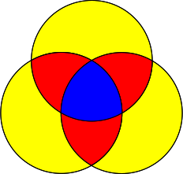
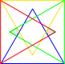

In a series of papers, starting with [Gr75] Branko Grünbaum, a well known geometer at the University of Washington, initiated the mathematical investigation of Venn diagrams. We will follow Grünbaum in first defining a more general concept, that of an independent family, and then move on to Venn diagrams. Both concepts are defined in terms of simple closed curves in the plane, which can be thought of as being drawn by starting at a point \(x\text{,}\) and then drawing a non-intersecting curve that ends back at \(x\text{.}\) The Jordan curve theorem states that such a curve \(C\) partitions the plane into \(C\text{,}\) together with two disjoint open regions \(int(C)\text{,}\) the interior of \(C\text{,}\) and \(ext(C)\text{,}\) the (unbounded) exterior of \(C\text{.}\)
Definition2.1.1.
Let \(\mathbf{C} = \{ C_1, C_2, \cdots, C_n \}\) be a collection of simple closed curves drawn in the plane. The collection \(\mathbf{C}\) is said to be an independent family if the region formed by the intersection of \(X_1 \cap X_2 \cap \cdots \cap X_n\) is non-empty, where each \(X_i\) is either \(int(C_i)\) or is \(ext(C_i)\text{.}\) If, in addition, each such intersection region is connected and there are only finitely many points of intersection between curves, then C is a Venn diagram, or an \(n\)-Venn diagram if we wish to emphasize the number of curves in the diagram.
Note that the term region in the mathematical literature is often assumed to be connected; when discussing Venn diagrams no confusion should arise. Since there are 2 choices for each \(X_i\text{,}\) there are \(2^n\) non-empty disjoint regions that result from the different intersections in the definition. One region, the one arising from the intersection of all the exteriors, is unbounded and all of the other regions are bounded. In a Venn diagram all regions are required to be connected, meaning that there is a curve joining any two points in a region, a curve that is entirely contained in the region. The condition that there are only a finite number of intersection points is usually assumed in the literature, but sometimes not stated explicitly. It rules out, e.g., segments of curves from intersecting. We will relax this restriction in Section 5.5.
Note that some authors refer to diagrams with fewer than \(2^n\) non-empty regions as Venn diagrams, but they are more properly termed Euler diagrams, after the mathematician Leonard Euler. More on these important diagrams can be found in Section 6.5, Generalizations and Extensions of Venn Diagrams. We refer to a region enclosed by exactly \(k\) curves as a \(k\)-region or \(k\)-set.
Figure2.1.2.Regions labeled by inclusion.
Figure2.1.3.Regions labeled by bitstrings.
Figure2.1.4.Regions colored by size.
Above we show the most familiar of all Venn diagrams. In this case \(n=3\text{,}\) the simple closed curves are all circles, and in Figure 2.1.2 the 8 regions have been labelled with the interiors that are included in each intersection. The eighth region is the exterior region, corresponding to the empty set. In Figure 2.1.3, regions have been labelled with bitstrings (binary strings) of length \(n\text{,}\) where inclusion in A is indicated by the first bit, B by the second bit, and C by the third bit. This labelling will also be used often in the sequel. The colored diagram Figure 2.1.4 has all 1-sets colored yellow, all 2-sets red, and the 3-set blue. Thus there is 1 0-set, 3 1-sets, 3 2-sets, and 1 3-sets. The 3 circle Venn diagram also occurs as a minimal projection of the Borromean Rings, see Section 2.3.
Observation2.1.5.
For \(0 \le k \le n\text{,}\) the number of \(k\)-regions in a Venn diagram is \({n \choose k}\text{.}\)
Figure2.1.6.An independent family that is not a Venn diagram
On the left we show an example, for \(n=4\text{,}\) of an independent family that is not a Venn diagram. Here the simple closed curves are each congruent triangles, which are colored red, blue, green, and gold. Note that the intersection of the interiors of the red and green triangles with the exteriors of the blue and gold triangles gives a disconnected region, the two cross-hatched regions in the figure. For an example of intersecting closed curves that are not an independent family, consider the five Olympic Rings.
A simple Venn diagram is one in which no more than two curves intersect at a common point.
Simple diagrams are in some sense the “nicest” as they are easiest to draw and understand. All of the figures in this chapter are simple, but we will see many examples in other chapters of non-simple diagrams. Unless stated otherwise, we assume that Venn diagrams are simple.
You often see 2, and 3 curve Venn diagrams drawn with circles, but all diagrams with 4 circles seem to have the wrong number of regions. In the next chapter we’ll prove a little theorem that implies that a 4-Venn diagram can never be drawn with circles, even if they have varying diameters. The basic reason is that there are too many regions for the possible number of intersections. Below we make two observations. The reader is encouraged to try to figure out why these are true.
Definition2.1.9.
Suppose two curves intersect at a point \(x\text{.}\) The curves can cross at \(x\text{,}\) in which case we say that they intersect transversally. If they do not cross, then we say that they intersect non-transversally, or that they kiss.
Observation2.1.10.
In a simple Venn diagram, at every point of intersection, the two curves meet transversally. I.e., the two curves cross and do not meerly “kiss” each other. More generally, at any point of intersection in a Venn diagram, there must be at least two curves that meet transversally.
Proof.
Suppose that curve \(A\) kisses curve \(B\) at point \(x\) in Venn diagram \(V\text{.}\) In a rotation about \(x\) there are 4 regions, which we may denote \(AA\text{,}\)\(AB\text{,}\)\(BB\text{,}\) and \(BA\text{.}\) Unless \(AB\) and \(BA\) are connected we can not have a Venn diagram since these regions are in the same set of interiors and exteriors of curves. We will show that they are not connected, a contradiction which will prove the observation. Because \(V\) is a Venn diagram, curves \(A\) and \(B\) must have at least two transverse intersections, for otherwise one curve would be contained in the other. Define a closed curve \(C\) by following curve \(A\) with region \(AB\) on its boundary until first encountering a transverse intersection \(y\) with \(B\text{,}\) and then follow \(B\) back to \(x\text{.}\) The curve \(C\) might have points of kissing, but no transverse intersections. To finish the proof, observe that \(C\) contains region \(AB\) but excludes region \(BA\text{,}\) and thus they are not connected. The more general statement may be proven by essentially the same proof.
Observation2.1.11.
At most \(n\) curves pass through any point of intersection in a \(n\)-Venn diagram.
Proof.
Since the curves are simple closed Jordan curves, they do not self-intersect, and thus pass through any point at most once.
The reason that Venn wanted his diagrams to have all \(2^n\) non-empty is that he would shade any regions that were excluded from the syllogism under consideration. We can also regard these shaded Venn diagrams as representing a set system; that is, one of the \(2^{2^n}\) sets of subsets of \(\{1,2,\ldots,n\}\text{.}\) If a region is not shaded, then the corresponding set of interiors is in the set system. We use set systems when comparing Venn and Euler diagrams in Section 6.5.
Finally, we note that the 3-circle diagram shown above, and the 2-circle diagram for 2 sets, appear often in the context of illustrating simple logical arguments. Readers interested in the applications of Venn diagrams to logical arguments are referred to the excellent introductory article by Glassner [Gl] , the book by Shin [Sh] , and many standard logic textbooks.
Subsection2.1.1Families of Intersecting Simple Curves
It is sometimes convenient to consider wider families of curves when proving results about Venn diagrams, such as independent families. We define another such family below.
Definition2.1.12.
A family of simple curves (or a FISC) is a collection of finitely-intersecting simple closed curves in the plane, with the property that there is some open region common to the interior of all the curves. A FISC is simple if at every point of intersection exactly two curves meet, and they cross each other transversally. A FISC is convex if each curve is convex.
Clearly, every independent family is a FISC, but not every Euler diagram.